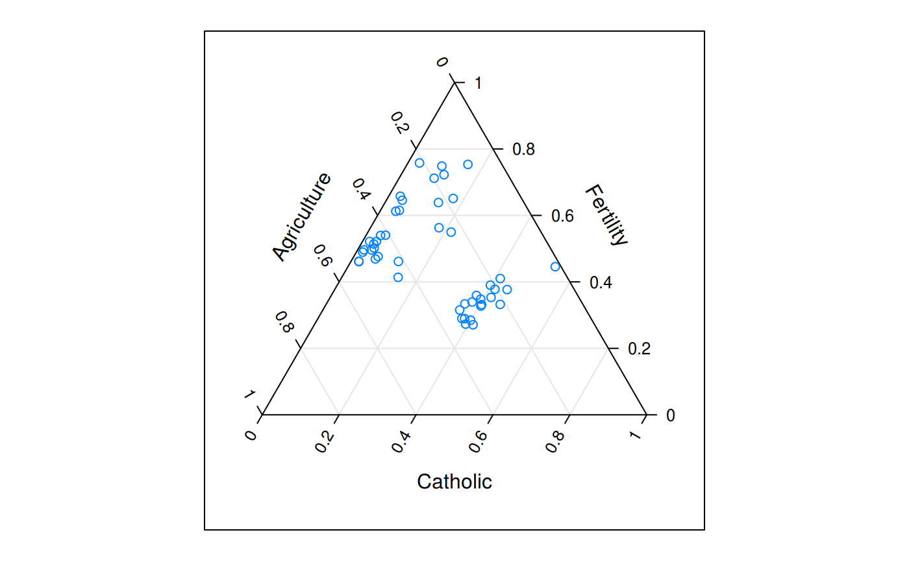
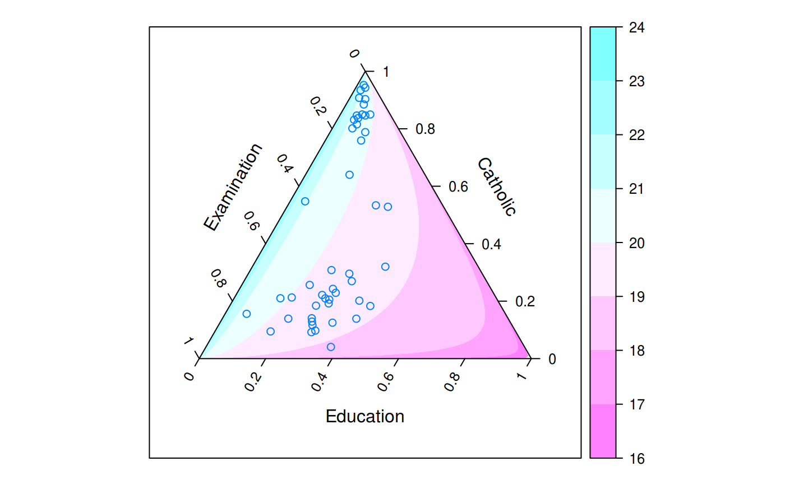
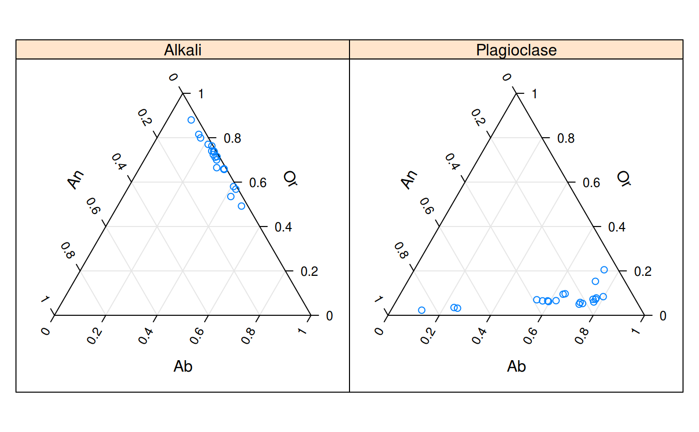
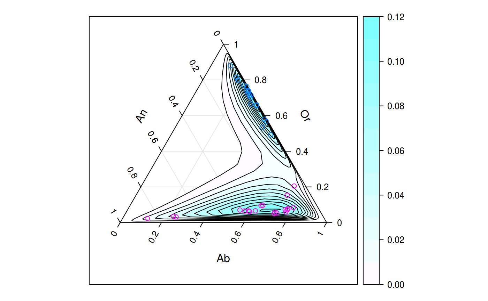

A ternary plot is a triangular diagram that displays proportions of three variables. It can be used to map three-dimensional data to a two-dimensional surface with the caveat that the data's original scales are lost (unless it was proportional data to begin with).#'
ternaryplot(x, data, ...) # S3 method for formula ternaryplot(x, data = NULL, response = NULL, groups = NULL, density = FALSE, region = density || !is.null(response), contour = density || !is.null(response), labels = !is.null(response), colorkey = region, xlab, ylab, zlab, xlim = c(-0.15, 1.15), ylim = c(-0.3, 1), panel = panel.ternaryplot, default.prepanel = lattice.getOption("prepanel.default.xyplot"), drop.unused.levels = lattice.getOption("drop.unused.levels"), subset = TRUE, ...) # S3 method for data.frame ternaryplot(x, data = NULL, ...) # S3 method for matrix ternaryplot(x, data = NULL, ...)
| x | See Methods (by class). |
|---|---|
| data | A data frame in which the |
| ... | Arguments that are passed on to other methods, particularly
|
| response | An optional response variable |
| groups | A variable or expression to be evaluated in |
| density | Compute two-dimensional density estimates via |
| region | Fill density or response estimates with a color gradient. |
| contour | Draw contour lines for density and response estimates. |
| labels | Label contour lines. |
| colorkey | if |
| xlab | X axis label (the left dimension) |
| ylab | Y axis label (the right dimension) |
| zlab | Z axis label (the top dimension) |
| xlim | X limits for the plot region. |
| ylim | Y limits for the plot region. |
| panel | The panel function. |
| default.prepanel | The default prepanel function. |
| drop.unused.levels | Drop unused conditioning or groups levels. |
| subset | An expression that evaluates to a logical or integer indexing vector. Like groups, it is evaluated in data. Only the resulting rows of data are used for the plot. |
An object of class "trellis". The
update method can be used to
update components of the object and the
print method (usually called by
default) will plot it on an appropriate plotting device.
formula: A formula of the form top ~ left * right. Variables
will be evaluated inside data if provided.
data.frame: A data frame for which the first three columns will
be mapped to the left, right, and top dimensions of the ternary plot
respectively.
matrix: A matrix for which the
first three columns will be mapped to the left, right, and top
dimensions of the ternary plot respectively.
ternaryplot(Fertility ~ Agriculture * Catholic, data = swiss)ternaryplot(Catholic ~ Examination * Education, response = Infant.Mortality, data = swiss, contour = FALSE)ternaryplot(Or ~ An * Ab | Feldspar, data = feldspar)ternaryplot(Or ~ An * Ab, groups = Feldspar, data = feldspar, density = TRUE)